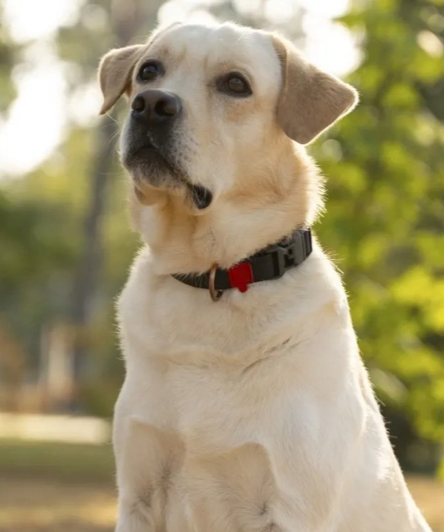

Resgatamos, cuidamos e encontramos famílias amorosas para animais abandonados. Junte-se a nós nessa missão.

A Coração Animal é uma ONG dedicada ao resgate, reabilitação e adoção responsável de animais em situação de abandono.
Resgatamos animais em situação de risco com atendimento veterinário imediato.
Nossos voluntários acolhem os animais com carinho até encontrar a família ideal.
Processo cuidadoso para garantir que cada animal encontre um lar permanente.